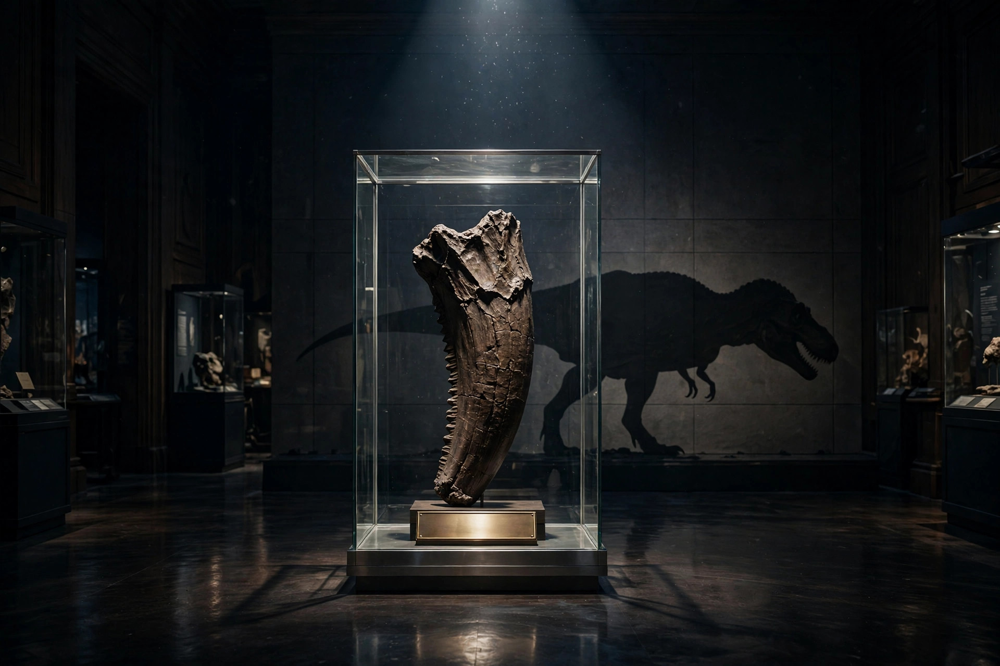

Deinodon — a dinosaur genus named in 1856 from fossil teeth and nothing else. No skeleton was ever found to go with them. The teeth were real — big, serrated, a tyrannosaur's teeth — but the animal built around them was an inference, and the name survives today as a nomen dubium: a doubtful name, kept on file for a dinosaur nobody can produce.
Say it with the stress up front — DY-nuh-don. Tonight it grew off a board of D, E, I, N, O, V and C, whose pangram was inconvenienced — and no word on the board has inconvenienced taxonomy longer on less evidence. It also shared the board with its little cousin diodon, the "two-tooth" porcupinefish: same -odon, much smaller bite.
From Greek deinos, "terrible," + odōn, "tooth" — named by Joseph Leidy in 1856 for teeth Ferdinand Hayden collected in the Judith River country of Montana.
A name that is all jaw — tap each part:
Eight letters, zero bones. The word is the most complete specimen of Deinodon that exists.
Three facts that have to be held together:
In 1856 the geologist Ferdinand Hayden shipped fossils east from the Judith River badlands of Montana. Among them: a set of large, curved, serrated teeth from a meat-eater — and nothing else of the animal at all.
Joseph Leidy of Philadelphia, America's leading paleontologist, did what his era did with impressive teeth: he named the animal. Deinodon horridus. The same haul gave him Troodon — also named from a single tooth.
No skeleton ever turned up wearing those teeth. When Tyrannosaurus arrived in 1905, the teeth were re-read as tyrannosaur teeth of unprovable ownership — and the name thinned into a nomen dubium, never formally killed, never again believed.
Hayden's Judith River collection reaches Leidy in Philadelphia, and Deinodon horridus becomes one of the first dinosaurs ever named from North America — before the continent had produced a single mounted skeleton. A name first, an animal hoped for later.
For decades, paleontology ran on teeth. Whole bestiaries were founded on single molars and canines — Troodon from one tooth, Trachodon from a handful. Teeth are hard, survive fossilizing, and look diagnostic. Sometimes they were. Often they were just teeth.
Henry Fairfield Osborn names Tyrannosaurus rex, and the old tooth-names get re-sorted against real skeletons. Deinodon's teeth match the tyrannosaur pattern exactly — which is the problem: they match too many tyrannosaurs to prove a genus of their own.
The original teeth rest in Philadelphia, at the Academy of Natural Sciences where Leidy worked: catalogued, genuine, and officially nobody's. Textbooks list Deinodon with a question that has now stood for 170 years.
1. Deinodon is known from…
2. The name deinodon means…
3. Deinodon was named in 1856 by…
4. Today, paleontologists file Deinodon as…
You mine Blossom for prompt seeds — here's this one, ready to plant:

Tonight's render — spot the quiet impossibility.